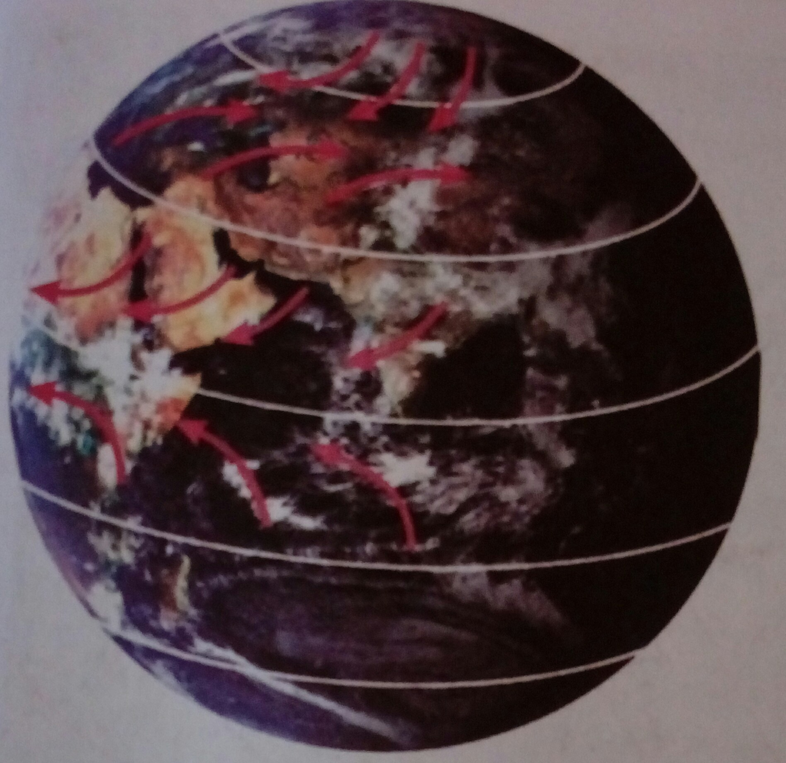
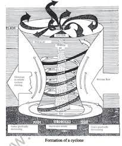

Orissa was hit by a cyclone with wind speed of 200 km/h on 18 October 1999. The cyclone smashed 45,000 houses making 7,00,000 homeless.On 29 October the same year, a second cyclone with wind speed of 260 km/h hit Orissa again. It was accompanied by water waves about 9 m high. Thousands of people lost their lives.Property worth crores of rupees was destroyed. The cyclone affected agriculture, transport, communication, and electric supply.
Uneven heating between the Equator and the poles
You might have learnt in Geography that regions close to the Equator get maximum heat from the Sun. The air in these regions gets warm. The warm air rises and the cooler air from the regions in the 0-30 degrees latitude belt on either side of the Equator moves in. These winds blow from the north and south towards the Equator. At the poles, the air is colder than that ai latitudes about 60 degrees. The warm air at thesee latitudes rises up and the cold wind from the polar regions rushes in, to take it's place. In this way, wind circulation is set up from the poles to the warmer latitudes, as shown in the figure.

The winds would have flown in the north-south direction from north to south, or from south and north. A change in direction is however, caused by the rotation of Earth.
Uneven heating of land and water
You have read about the sea breeze and the land breeze. In summer, near the equator the land warms up faster and most of the time the temperature of the land is higher than that of water in the oceans. The air over the land gets heated and rises. This causes the winds to flow from the oceans towards the land. These are monsoon winds. In winter, the direction of the wind gets reversed; it flows from the land to the ocean.The winds from the oceans carry water and bring rain. It is a part of the water cycle. The monsoon winds carry water and it rains. Clouds bring rain and give us happiness. Farmers in our country depend mainly on rains for their harvests. There are many folk songs associated with clouds and rain.
Here is one for you!
Roaring clouds across the sky Tell us that monsoon's here Dark and floating clouds them pour Raindrops every where Clouds make lightning flash overhead And irrigate fields with rain Clouds make earth, it's fragnance spread When wet with drops of rain Rising from the ocean vast Clouds fill up with rain Rain to ocean, back at last To mingle with ocean again!
Now, back to the topic, however it is not always happy ending. Rains often create problems. Can you list some of the problems? In nature itself there are certain situations that can sometimes create disasters and pose threath to humans,
animals and plant life. Let's study two such situations-- Thunderstorms and cyclones.
Thunderstorms
Thunderstorms develop in hot, humid tropical areas like India very frequently. The rising temperatures produce strong upward rising winds. These winds carry water droplets upwards, where they freeze, and fal down again. The swift movement of the falling down droplets along with the rising air create lightning and sound. It is this event that we call a thunderstorm.
You know that water requires heat when it changes from liquid to vapour state. Does the water give back heat when vapour condenses into liquid? Can you recall an experience to support This?
Structure of a cyclone
The center of a cyclone is a calm area. It is called the Eye of the storm. A large cyclone is a violently rotating mass of air in the atmosphere, 10 to 15 km high. The diameter of the eye varies from 10 to 30 km. It is a region free of clouds and has light winds. Around this calm and clear eye, there is a cloud region of about 150 km in size. In this region there are high-speed winds (150-250 km/h) and thick clouds with heavy rain. Away from this region the wind speed gradually decreases. The formation of a cyclone is a very complex process.

Did you know?
A cyclone is known by different names in different parts of the world. It is called a 'hurricane' int the American continent. In Philippines and Japan it is called a 'typhoon'.